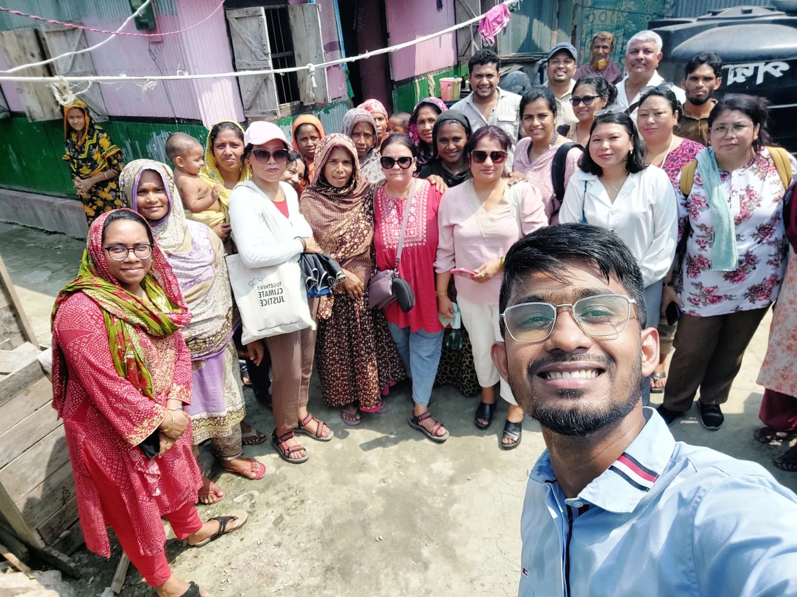
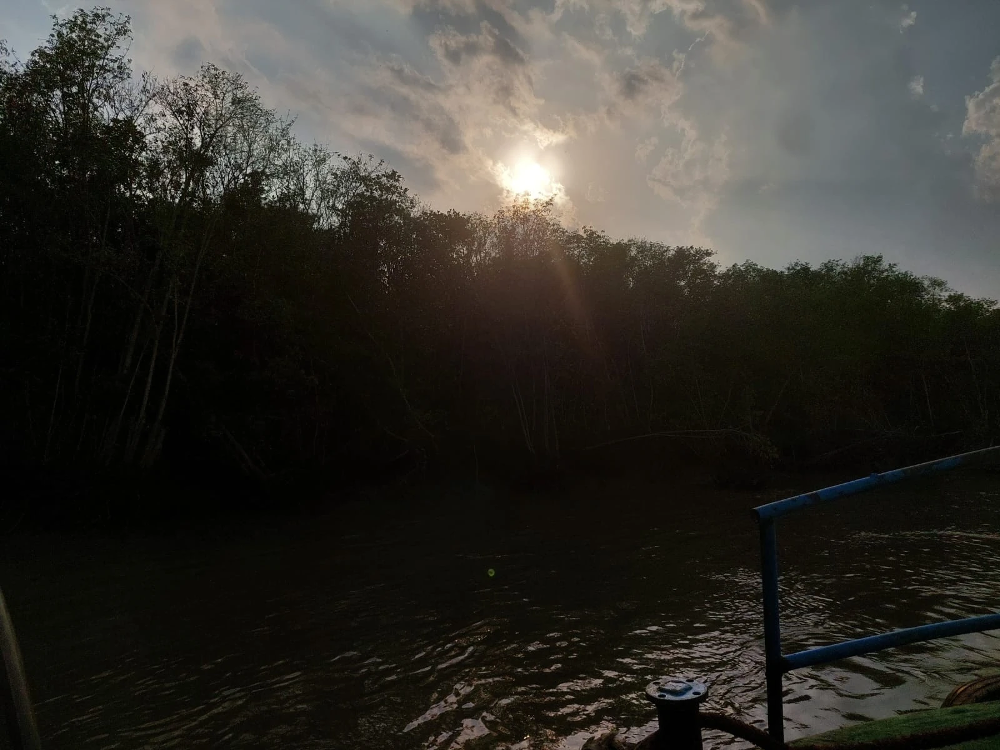
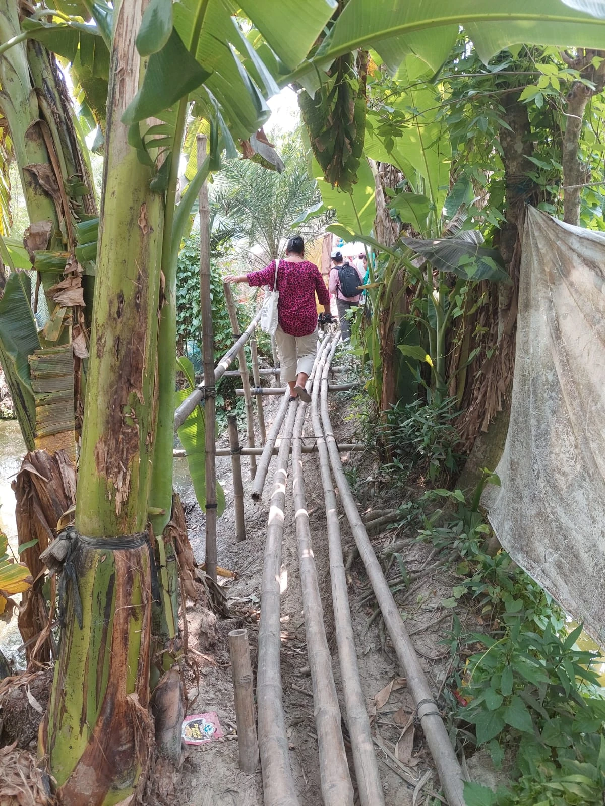
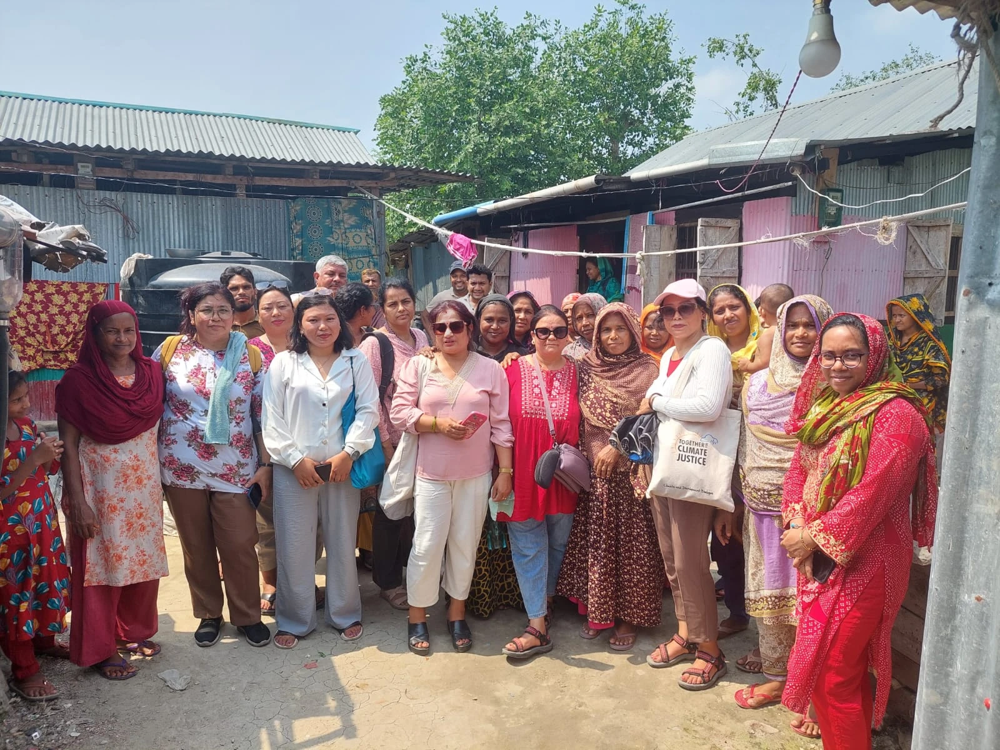
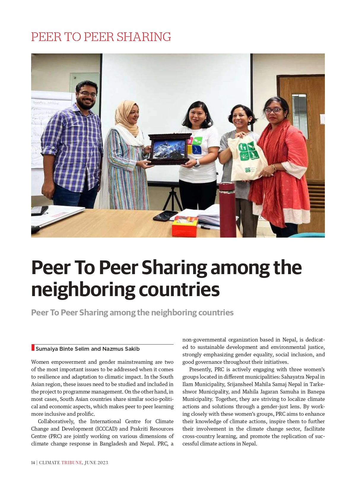
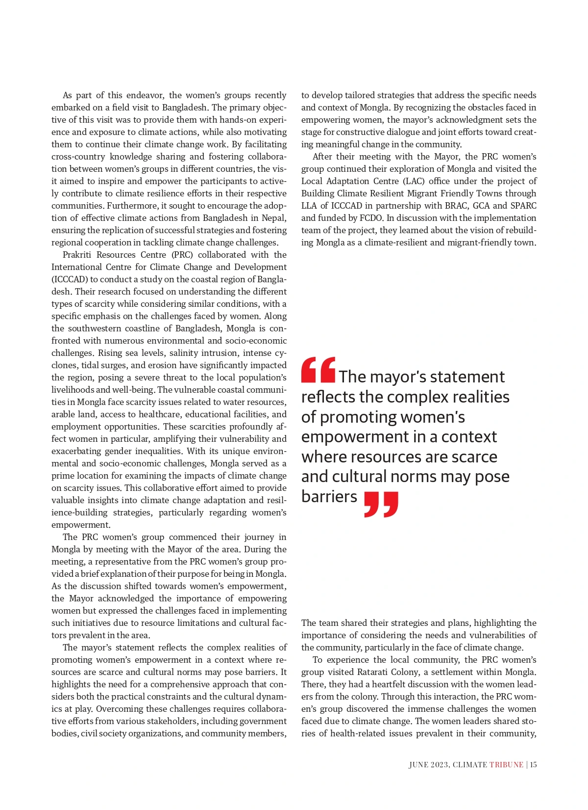
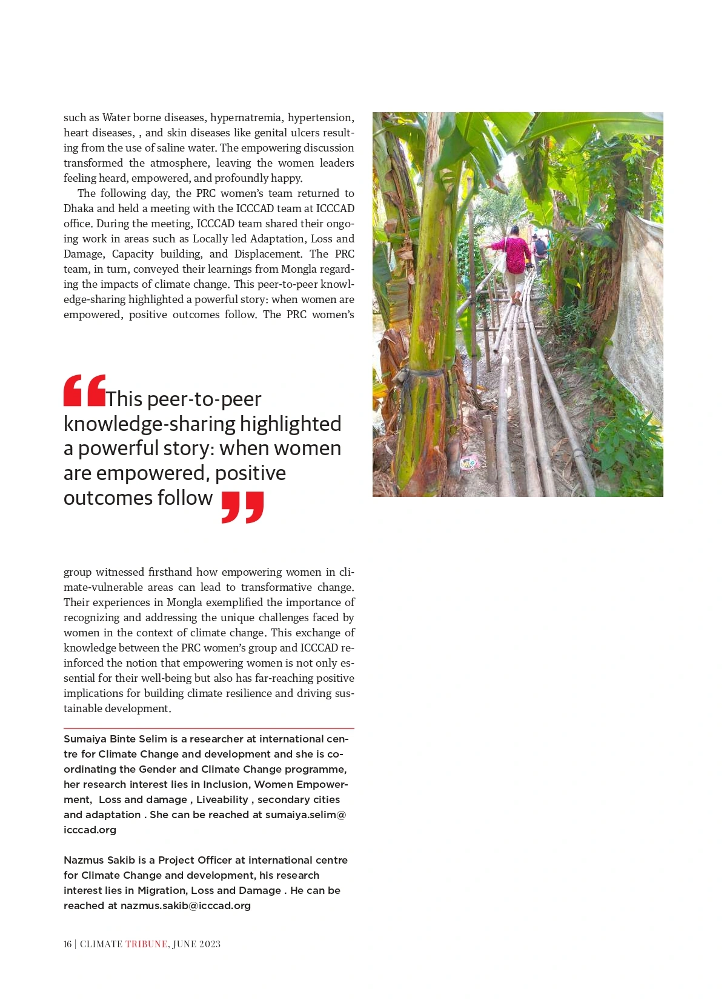

Coordinate
Support field movement and the local arrangements that allowed visiting participants to engage with people and places.
FIELD COORDINATION · CLIMATE + GENDER · KNOWLEDGE EXCHANGE
Connecting women’s groups from Nepal with the lived climate realities of coastal Bangladesh.
Mongla field exposure, local interpretation and the co-authored Climate Tribune story that carried the learning further.

Nazmus Sakib with visiting participants from Nepal and local community members during the Mongla exchange.
01 / THE PURPOSE
Women’s groups connected with Prakriti Resources Centre (PRC), Nepal visited Bangladesh for hands-on exposure to climate action and community realities. The exchange connected regional questions about gender and adaptation with the institutions and communities working through them.
My contribution was to support coordination and field guidance in Mongla, help participants understand the local context, and contribute to the written synthesis that followed.
The work brought field coordination, interpretation and climate communication into the same process.
02 / WHY MONGLA
Mongla gave the visit a concrete setting. The published article describes a coastal region facing salinity intrusion, cyclones, tidal surges, erosion and pressure on freshwater, land, livelihoods and services.
Those pressures overlap in everyday life. Seeing a settlement, moving through its access routes and hearing from residents made the relationship between climate exposure and daily routines easier to discuss.

A river and wooded coastal landscape photographed during the Mongla field visit.

Visiting participants moving along a narrow bamboo walkway in a Mongla settlement.
Field exposure gave participants a shared reference point for discussing how environmental pressures intersect with mobility, infrastructure and access.
03 / MY ROLE
My familiarity with ICCCAD’s work in Mongla helped me provide local context throughout the visit. The contribution combined practical coordination with interpretation and knowledge communication.
Support field movement and the local arrangements that allowed visiting participants to engage with people and places.
Explain the Mongla setting and connect what participants saw with coastal hazards, salinity, water stress and women’s experiences.
Help bring visitors, local community members and institutional perspectives into the exchange.
Contribute to turning the field learning into a co-authored Climate Tribune article.
04 / THE EXCHANGE ROUTE
The delegation discussed women’s empowerment and the resource and cultural constraints local institutions face.
The implementation team introduced the vision and work of building a climate-resilient, migrant-friendly town through locally led adaptation.
Women leaders discussed water, health and the pressures of climate change in their community.
The visiting group shared its Mongla learning, while ICCCAD discussed work on adaptation, loss and damage, capacity building and displacement.
The route follows the sequence described in the co-authored article: the Mayor, Local Adaptation Centre, Ratarati Colony and the ICCCAD exchange in Dhaka.
05 / WOMEN’S LIVED REALITIES

Visiting women from Nepal and local community members gathered during the field exchange.
At Ratarati Colony, women leaders brought the conversation down to daily realities. The article records their concerns about saline water and health alongside the wider pressures of water scarcity, livelihoods and access to services.
These were community accounts shared through the exchange. They made clear why a discussion of climate vulnerability also needs to consider who carries the daily burden and whose knowledge is heard.
Local experience gave the exchange
something specific to work with.
Safe water access and the practical demands of household use and hygiene.
Women’s accounts of health concerns and the pressures associated with saline water use.
Scarcity of land, employment opportunities and access to essential services.
Space for women’s knowledge, priorities and experience within climate discussions.
06 / WHAT CROSSED THE BORDER
Local climate pressures, community perspectives and exposure to adaptation work in Mongla.
PRC’s work with women’s groups, gender equality, inclusion and local climate engagement.
The exchange created a space to compare experiences and consider how useful practices might inform work in another setting. Its value lay in the dialogue, grounded in what participants had seen and heard.
07 / PUBLISHED SYNTHESIS
PAGES 14–16
The co-authored article brought the purpose, route and learning of the Bangladesh–Nepal exchange into a written account. It connected women’s empowerment and climate resilience with the realities discussed in Mongla.
The official ICCCAD issue page lists both authors. The final article page also includes my author biography as a Project Officer at ICCCAD, with research interests in Migration, Loss and Damage.

Opening page of the Climate Tribune article, showing the title and joint author credit.

The article’s account of Mongla, the Mayor, Local Adaptation Centre and Ratarati Colony.

The concluding discussion and biographies for Sumaiya Binte Selim and Nazmus Sakib.
08 / WHAT THIS WORK DEMONSTRATES
A field visit becomes useful when people can connect what they see, what communities say and the wider pressures shaping those experiences. My contribution helped bridge those parts of the exchange.
This case brings together cross-country coordination, local climate interpretation, stakeholder connection and collaborative writing. The publication gives that field experience a form that can be read and discussed beyond the visit.